2 分析环境的搭建与必要的编程技术
本章提要
本章帮助你搭建趁手的本地工作环境，并把重计算放到远端服务器。本地的主要工作是写代码、用 R 绘图，以及运行 Claude Code、Codex、ZCode 等 AI agent，繁重的计算则交给服务器完成。我们先比较 Windows、Linux 和 macOS 作为本地主机的优劣，完成 WSL 与 macOS 的基础配置；再学习连接服务器、传输文件、基本 Linux 操作、Shell 批处理与软件环境配置；然后掌握 R 与 Python 的最低必要基础，安装并配置本地 AI agent；最后建立项目目录、版本管理与排错的习惯。阅读时可以先打通一条从本地到服务器的完整路线，再在后续章节的实战中反复强化。
2.1 电脑、服务器与软件环境
选择并配置适合分析的本地工作环境。
生物信息学平台的构建
生物信息学的分析平台由本地电脑和远端服务器两部分组成，两者分工不同。本地电脑主要承担三类工作：编辑代码，用 R 等工具绘制图形，以及运行 Claude Code、Codex、ZCode 这类 AI coding agent 辅助编程；而比对、定量这些吃算力的计算，几乎都在远端服务器上完成。因此，配置本地环境的关键不是性能，而是顺手：选择一个自己习惯的操作系统，把它配置成能写代码、能连服务器、能跑 AI agent 的工作台。本章就按这个思路展开：先选好并配置本地系统，再打通与服务器的连接和基本操作。
Windows、Linux和macOS的选择
选择本地主机系统时，评判标准与挑选服务器不同：本地不承担重计算，关键在于开发体验、与服务器环境的接近程度，以及个人的使用习惯。下面分平台简要分析。
Windows
Windows 生态最普及，但与 Linux 服务器差异较大：大多数开源生信软件只提供 Linux 版本的二进制包或源代码，在 Windows 上直接编译安装历来困难。WSL 的出现改变了这一点——在 Windows 上可以获得十分接近 Linux 命令行的操作和兼容性体验（见下一节）。对已经在使用 Windows 的读者，没有必要为了生信专门更换电脑，配置好 WSL 即可。
Linux
在本地直接使用 Linux 桌面（如 Ubuntu）的最大好处，是与服务器环境完全一致：同样的命令行、同样的软件安装方式，写好的脚本几乎可以原样搬上服务器。代价是日常办公和商业软件生态较弱，遇到问题需要一定的排查意愿。适合愿意把电脑完全当作开发工具使用的读者。
macOS
macOS 基于 Unix，自带终端和一批常用命令行工具，与 Linux 服务器天然接近，编译安装开源软件通常也顺利；同时保留了完整的图形界面生态，作为本地主机兼顾开发与日常使用。需要注意的是，苹果芯片（Apple Silicon）的 CPU 架构与多数服务器（x86_64）不同，个别只提供 x86 版本的软件需要通过系统自带的兼容层运行。
WSL
微软官方文档很好地解释了WSL（Windows Subsystem for Linux）是什么。
适用于 Linux 的 Windows 子系统可让开发人员按原样运行 GNU/Linux 环境 - 包括大多数命令行工具、实用工具和应用程序 - 且不会产生传统虚拟机或双启动设置开销。
安装WSL
在Windows 10（21H2及以后）和Windows 11上，以管理员权限启动PowerShell，一条命令就可以完成安装：
wsl --installwsl --install会自动启用所需功能、下载Linux内核并默认安装Ubuntu，完成后按提示重新启动计算机。之后可以用wsl --list --online查看可安装的发行版，用wsl --install -d 发行版名称安装其他发行版。
在更旧的Windows 10版本上，wsl --install不可用，需要手动启用功能（以下小节作为旧方法保留）。以管理员权限启动PowerShell，依序执行以下两个命令后重新启动计算机。
启用“适用于 Linux 的 Windows 子系统”可选功能
dism.exe /online /enable-feature /featurename:Microsoft-Windows-Subsystem-Linux /all /norestart启用“虚拟机平台”可选功能
dism.exe /online /enable-feature /featurename:VirtualMachinePlatform /all /norestart设置WSL2为默认版本
使用wsl --install安装时默认已经是WSL2，通常无需这一步；只有在旧系统上手动启用功能后，才需要以管理员权限启动PowerShell执行以下命令，把之后安装的发行版默认设为WSL2。
wsl --set-default-version 2安装发行版
访问Microsoft Store的Linux发行版页面，选择一个你中意的发行版即可，或者直接在应用商店搜索Linux，可以找到更多发行版；也可以按上一小节的方法，在命令行用wsl --install -d 发行版名称直接安装。
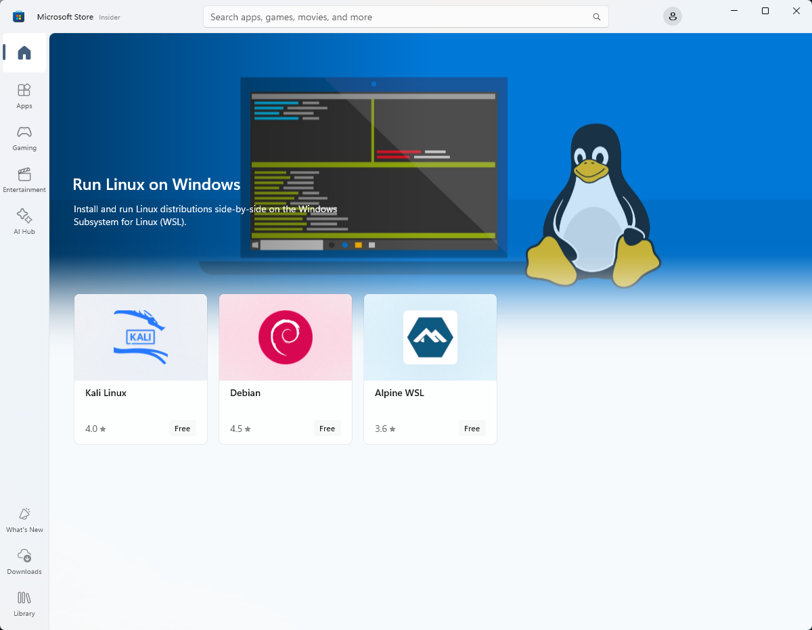
创建账户和密码
安装完成发行版后首次启动时会要求你创建用户名和密码。
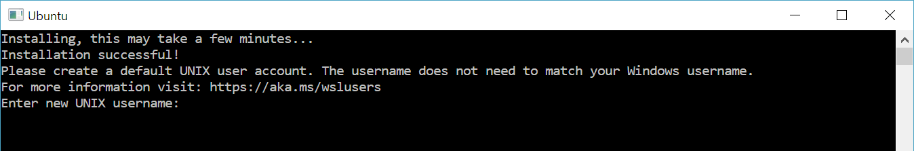
Windows Terminal
Windows 终端可启用多个选项卡（在多个 Linux 命令行、Windows 命令提示符、PowerShell 和 Azure CLI 等之间快速切换）、创建键绑定（用于打开或关闭选项卡、复制粘贴等的快捷方式键）、使用搜索功能，以及使用自定义主题（配色方案、字体样式和大小、背景图像/模糊/透明度）。
在应用商店搜索Windows Terminal后安装即可。
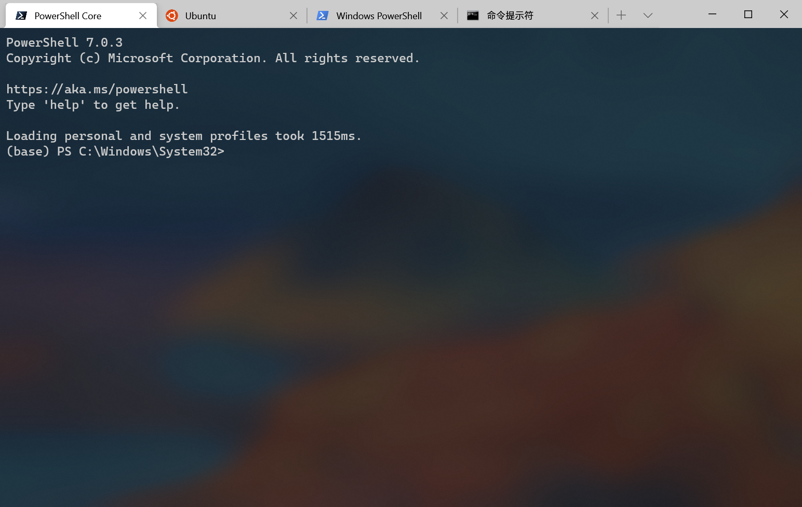
mac系统的基础配置
macOS 的基础配置比 Windows 简单得多，基本不太需要专门折腾。系统自带的 Terminal 已经可以完成绝大多数工作，习惯图形界面的读者可以安装 iTerm2 等第三方终端，获得分页、分屏和搜索等增强功能。由于原生兼容 Unix，Linux 下的很多命令和工具在 macOS 上可以直接使用；需要安装命令行软件时，建议先安装 Homebrew 包管理器，再通过 brew install 安装。macOS 的劣势主要在少数商业软件和与服务器架构的差异上（见上一节），但作为本地主机，它是开箱即用程度最高的选择之一。
2.2 连接远端服务器
打通本地与服务器之间的完整链路：连接、传输文件、执行命令、安装软件。如今的服务器几乎全部运行 Linux，常见的有 Ubuntu Server LTS、Debian，以及接替 CentOS 的 Rocky Linux 和 AlmaLinux。
使用ssh连接
SSH命令是连接服务器很重要的工具。Linux和macOS都自带ssh命令；Windows长期以来不自带SSH命令，从Windows 10开始情况改善，较新的Windows 10和Windows 11已经预装OpenSSH客户端，在PowerShell中直接运行ssh就可以使用。OpenSSH服务器端则仍需要手动安装：在任务栏搜索框中输入“可选功能”，结果中会出现“添加可选功能”，点击即可进入。也可以通过“Windows设置→应用→可选功能”进入。
原稿图片缺失或外部地址不可用：https://images-cdn.shimo.im/ZZob1QhLKmoyhnlk/Snipaste_2018_09_09_21_16_25.png!original。原有图位保留。
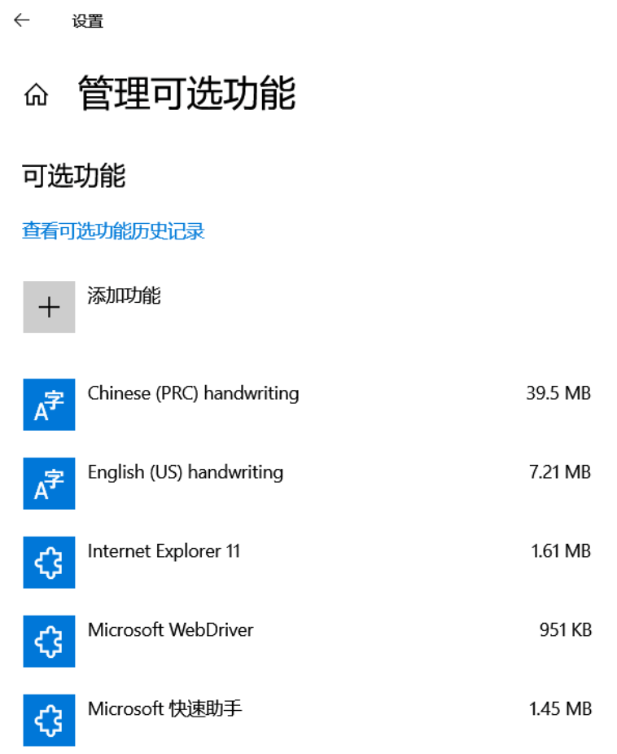
点击“添加功能”进入到添加功能的页面，选择需要的组件（例如“OpenSSH 服务器”；较早系统上未预装客户端时也可在此安装“OpenSSH 客户端”），点击“安装”按钮即可开始安装，不长的一段时间后就安装完毕了。
原稿图片缺失或外部地址不可用：https://images-cdn.shimo.im/2PrwPwoL75oUjCsd/Snipaste_2018_09_09_21_20_52.png!original。原有图位保留。
连接服务器的基本命令是 ssh 用户名@服务器地址，首次连接时系统会提示确认并保存主机指纹，之后输入密码即可登录。
本节内容待补充：连接示例、密钥登录与多服务器配置。
文件的上传与下载
分析数据经常需要在本地与服务器之间往来：把原始数据传上去，把结果图表取回来。常用方式有两类：图形界面的 sftp 软件（如 FileZilla）适合零散文件的可视化拖拽；命令行的 scp 与 rsync 适合批量和脚本化传输，其中 rsync 还支持增量同步，是大目录反复备份的首选。
本节内容待补充：FileZilla 配置示例与 scp、rsync 常用命令。
基本的linux操作
登录服务器后，所有操作都在 Linux 命令行中完成。本节将围绕文件与文本的查找、查看、筛选和传递，介绍最常用的命令，以及路径、环境变量等基本概念。
本节内容待补充：将依据《Linux 十大常用命令》《Unix 十大实用命令》《Unix 十大高级命令》三份讲义重新编写。
Shell 脚本与批量处理
将单条命令组织为可检查的批处理。
本节内容待补充。
软件环境的配置
在服务器上安装软件有两层选择：系统包管理器适合快速安装常见工具，conda 则适合生信软件和多版本环境隔离。Red Hat 系发行版对应的包管理命令是 dnf，用法与 apt 相近，本书以 Ubuntu 为例。
用 apt 安装软件
apt（Advanced Packaging Tool）是Debian系Linux发行版的默认包管理工具，用于对包括系统本身在内的升级、安装等管理操作。
Ubuntu 的官方源中收录了不少常用生信软件，例如 samtools、bwa、bedtools 等，一条 apt install 命令即可完成安装，无需手动编译。不过官方源里的版本通常偏旧、更新较慢，而且需要管理员权限；遇到版本太旧或没有收录的软件，就轮到下文的 conda 出场。
apt和apt-get命令
apt是2014年正式发布的新的apt包管理工具的命令，相较于apt-get系列命令它更为简洁易用。
| apt 命令 | 取代的命令 | 命令的功能 |
|---|---|---|
| apt install | apt-get install | 安装软件包 |
| apt remove | apt-get remove | 移除软件包 |
| apt purge | apt-get purge | 移除软件包及配置文件 |
| apt update | apt-get update | 刷新存储库索引 |
| apt upgrade | apt-get upgrade | 升级所有可升级的软件包 |
| apt autoremove | apt-get autoremove | 自动删除不需要的包 |
| apt full-upgrade | apt-get dist-upgrade | 在升级软件包时自动处理依赖关系 |
| apt search | apt-cache search | 搜索应用程序 |
| apt show | apt-cache show | 显示包的详细信息 |
| 新的apt命令 | 命令的功能 |
|---|---|
| apt list | 列出包含条件的包（已安装，可升级等） |
| apt edit-sources | 编辑源列表 |
apt镜像设置
apt默认的镜像在国内的访问速度是较慢的，所以设置一个国内的镜像是必要的。这里推荐北京外国语大学的开源软件站。其帮助信息完善，例如Ubuntu的镜像设置帮助文档。
可以在文档中选择你具体使用的Ubuntu版本以获取对应的软件源地址。备份原先的软件源配置文件后即可更改配置文件。修改完成后执行sudo apt update命令刷新索引即可生效。
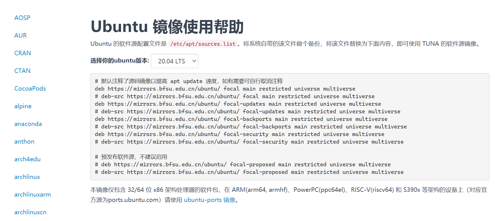
conda 与 Bioconda
Anaconda是Anaconda公司开发的一个Python发行版，集成的除了Python本体外，还包括大量科学计算的常用模块，以及Anaconda公司开发的Python模块和环境管理器conda。conda对环境和包管理的易用性要超过Python本地自带的功能，而且还可以管理非Python的模块（Perl、Java、R……）。对于生信分析人员，Bioconda这个conda源更是收入了大量生信分析软件，大大降低了生信软件的安装复杂度，一条命令即可，不需要手动编译和root权限。
在你已经添加了相应软件源的情况下，安装包只要用下面的命令即可(这里演示的是IPython的安装)。
conda install ipythonconda默认会从Anaconda公司的官方服务器下载模块，而且默认只有官方defaults源一个。其他常用源像conda-forge和Bioconda也需要用户自己添加。另外，官方defaults源对较大规模机构（200人以上）的商业使用有授权限制，社区目前的普遍做法是优先使用完全开放的conda-forge源。这个时候手动添加常用源的国内镜像就十分有必要。
Anaconda的安装
这些镜像网站本身也会提供Anaconda的安装包。直接从镜像站下载安装包就免去官网下载可能的卡顿。需要特别提到的是，镜像站除了提供标准版的Anaconda安装包外还会提供Miniconda的安装包。这是一个精简的版本，体积相比标准版要小不少，只包括Python和conda管理器，包需要自行通过conda和pip安装。在一些磁盘有限的情况下可以选择Miniconda。此外还有社区维护的Miniforge发行版：默认使用conda-forge源并自带mamba，安装后开箱即用，近年来越来越多人直接以它作为安装入口。
Anaconda给Mac提供的是pkg和sh安装包，给Windows提供的是exe安装包，而给Linux只提供sh安装包。pkg和exe双击安装即可，而sh安装包需要通过命令行执行，即使通过图形界面启动sh安装包，很多设置也要在随之启动的终端下进行。
在这里也要特别提醒的是pkg和exe安装过程中会有一步让你设置是否要将Anaconda的路径加入到环境变量中，建议勾上（安装器默认不勾选，官方更推荐从开始菜单中的Anaconda专用终端启动，两种方式都可用）。而sh安装的最后一步也会询问是否进行初始化（init），要记得输入yes。这些选上之后，只要重启终端环境变量即可生效，就可以正常使用conda管理和相关的包。
Anaconda镜像的设置
目前国内最完善的公开Anaconda镜像就是清华大学的TUNA镜像。不过国内部分地区访问清华大学镜像有时候不稳定，可以考虑使用北京外国语大学的镜像，其帮助页面内容由运行维护该站的清华大学TUNA协会同步维护，与清华源基本保持一致，但访问的稳定性很多时候更为优秀。帮助信息提到的存放.condarc配置文件的用户目录，在Linux下使用cd ~命令进入；在Windows下使用cd $env:USERPROFILE命令进入，或者在资源管理器地址栏输入%USERPROFILE%后回车进入。
我们依然推荐你通过上面的链接详细查阅他们的帮助信息，写入在custom_channels范围的镜像地址在使用时只有指定-c参数才会生效。例如如果按帮助页面的信息设置Anaconda配置文件，使用conda install seqkit命令会安装失败，需要使用conda install -c bioconda seqkit命令。
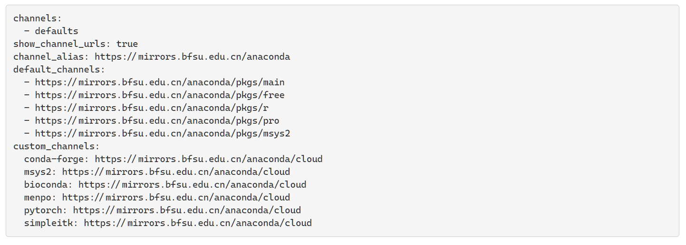
Anaconda环境的管理
为了防止不同的依赖之间相互冲突造成bug，除了最核心的常用组件，通常会为了每一类项目单独建立一个独立的环境。使得不同项目之间的模块可以版本不同。比如有时需要不同版本的Python或者R。
创建环境
你可以指定环境的名称，后面再指定环境中要安装的一个或几个包及其版本，也可以只有名称没有其他参数。这时新建的环境里就不会预装任何包
conda create -n py3 python=3.12指定环境名称的创建方式会把环境相关文件放在Anaconda的安装目录下，但是有时候你需要将环境相关文件放在指定的路径。这个时候你就可以通过-p参数来指定conda环境的路径。比如下面就是一个指定环境目录为/home/test_conda并指定环境中的Python版本号为3.12的例子。
conda create -p /home/test_conda python=3.12删除环境
我们同样可以通过参数来指定特定名称或路径的环境。
conda remove -n py3 --all
conda remove -p /home/test_conda --allmamba
本书在这里还要特别提到一个C++实现的conda包管理器：mamba。早期conda最大的痛点是经典求解器计算依赖和扫描各个源的速度都较慢，已安装的包较多时安装过程会明显变慢。mamba通过C++实现加上计算依赖和扫描源时的多线程并行，把这一过程缩短了一个数量级。正因如此，conda官方从23.10版起把与mamba同源的libmamba作为默认求解器，现在直接使用conda通常已经足够快。如果你仍想要独立的mamba命令（例如使用自带mamba的Miniforge），只需把命令中的conda替换成mamba，用法完全一致。
安装mamba也很方便，直接通过conda install -c conda-forge mamba命令即可。mamba团队近年还推出了面向项目的新工具pixi，有兴趣可以关注，但不是入门必需。
本节内容待补充。
使用vscode连接
VS Code 的 Remote-SSH 扩展可以把远端服务器变成本地开发环境：在本地编辑器中直接打开服务器上的目录，文件树、终端和代码补全都在本地呈现，修改实时同步到服务器。对习惯图形界面的读者，这是比纯命令行更友好的工作方式。
本节内容待补充：Remote-SSH 的安装、配置与连接示例。
2.3 R 数据处理与绘图基础
具备阅读差异分析代码和处理结果表的能力。
R and Rstudio
R语言也是生信分析中一个极为重要的编程语言。R语言官方的软件源CRAN中有着大量数据分析和生信领域的相关包。Bioconductor项目更是集中了大多数生信领域的R包。
R-base的安装和CRAN镜像设置
R-base的安装包可以通过CRAN的镜像站点获得，推荐使用北外的CRAN镜像。Windows和macOS用户根据自己的操作系统点击对应链接，可以进入获取二进制安装包的页面。
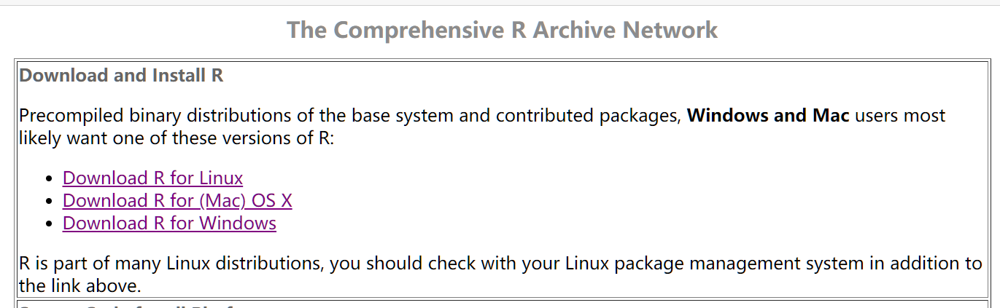
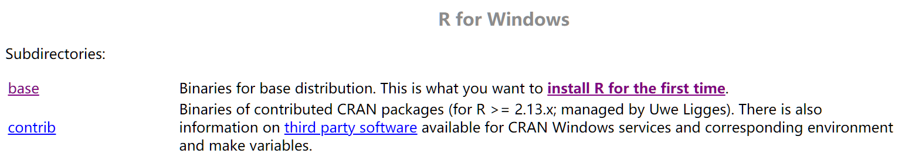
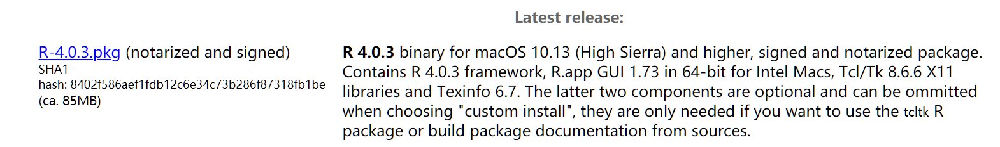
Linux用户如果有管理员权限，建议使用系统的包管理器安装。如果没有管理员权限也不要紧，使用Anaconda即可。使用conda install -c conda-forge r-base命令就可以完成R-base的安装。
而CRAN的镜像设置需要进入R的用户home目录，可以在R的交互模式下通过命令path.expand("~")获取。
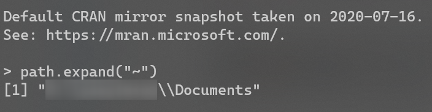
获取R语言环境的home路径后，进入到该路径。查看路径下是否已经存在.Rprofile，如果没有则新建一个空白的即可。随后在.Rprofile文件末尾加入options("repos" = c(CRAN="https://mirrors.bfsu.edu.cn/CRAN/"))，保存后会在新启动的R环境中生效。
Rtools
Bioconductor和CRAN上提供的R包绝大部分都提供Windows平台下的二进制包，安装过程无需编译。但因为二进制包的更新一般晚于源码包的更新，且个别R包不提供二进制包，所以还是存在需要编译安装的情况。这个时候就需要R官方所提供的编译器集合Rtools。
访问Rtools页面即可获得安装包。Rtools与R的版本配套更新，页面最上方始终提供当前R版本对应的安装包（写作本节时为Rtools45，配套R 4.5及更新版本），且只提供64位版本。如果你使用较老的R版本，可以访问历史版本页面下载对应的Rtools。
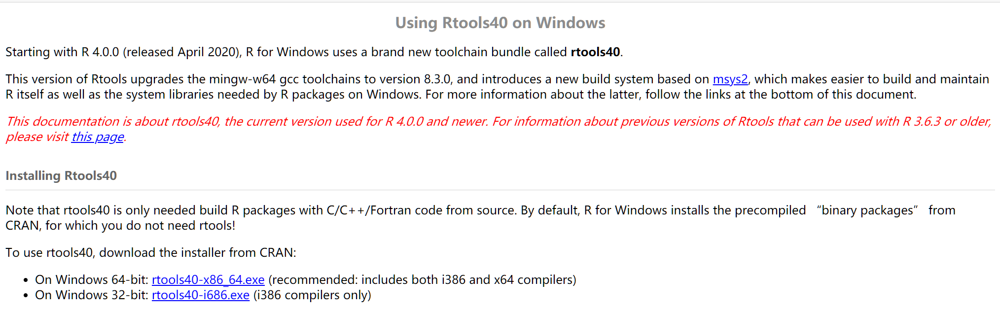
从R 4.2起，Windows上的R会根据安装时写入的注册信息自动发现Rtools，安装后无需配置即可在需要时调用相关编译器。只有使用R 4.1及更早版本搭配Rtools40等旧版Rtools时，才需要按下述旧方法手工配置路径：参照上一节中的path.expand("~")获取R的用户home目录，然后在该目录下编辑.Renviron文件，添加下面的内容。
PATH="D:\Program Files\rtools40\usr\bin;${PATH}"
# 上面分号前的内容是旧版Rtools安装目录下编译器所在路径，
# 应根据实际安装目录进行修改。
# 分号后的内容表示之前已有的PATH环境变量内容，
# 以免覆盖原有环境变量内容。配置完成后保存文件，然后重启R的交互环境。可以在交互环境中使用语句Sys.which("make")验证Rtools是否可用，如果成功则会出现Rtools目录下make.exe的路径（R 4.2及更新版本自动发现Rtools时，同样可以用这个语句验证）。以后在出现源码包版本高于二进制包版本，或R包无二进制包版本的情况，R就会提示你是否进行编译安装。你可以使用语句install.packages("Rcpp", type = "source")源码编译安装Rcpp包测试一下。
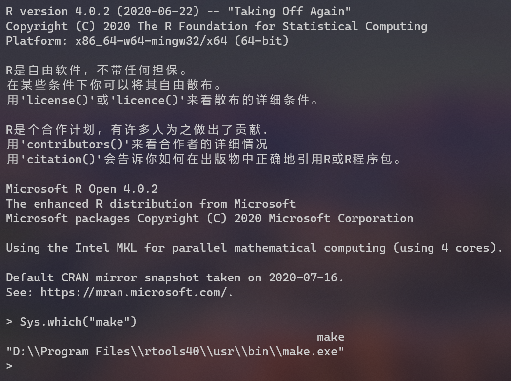
本节内容待补充。
2.4 Python 与结构化配置的最低必要知识
能读懂基础脚本及后续 Snakemake 中的 Python 表达式。
Python 基础速览
本节提供 Python 的入门参考：变量、循环、函数与模块的最小知识集合，足以读懂后续章节的示例代码和 Snakemake 工作流中的 Python 表达式。
本节内容待补充。
Jupyter
Jupyter是一个非营利开源项目，2014年从IPython项目诞生。从诞生以来不断发展，基于网页支持跨几乎所有编程语言的交互式数据分析与科学计算。最早的项目是IPython Notebook，随着发展改名Jupyter Notebook。而现在Jupyter项目的核心是JupyterLab。如果你之前是Jupyter Notebook的用户，迁移到JupyterLab的学习成本很低。第一眼看上去最大的变化可能就是多标签和侧边栏。JupyterLab如今已经发展到4.X版本，经典的Jupyter Notebook仍在并行维护，扩展生态相当成熟。
安装JupyterLab
安装JupyterLab非常简单，PyPI和Anaconda都有收录。这里再度建议大家使用C++实现的conda管理器mamba进行安装
pip install jupyterlab # pypi安装
conda install jupyterlab # anaconda安装
mamba install jupyterlab # mamba安装内核安装
JupyterLab安装时只支持Python，如果需要支持其他语言，需要自己安装相应的内核。例如R语言需要安装R包IRkernel，然后在R交互模式中使用IRkernel::installspec()命令注册内核到JupyterLab。而Julia语言则需要安装Julia包IJulia，然后通过build IJulia命令来注册内核。
本地和远程使用
JupyterLab的本地启动十分简单，启动一个终端（Windows下可以选择PowerShell，或者通过Windows Terminal使用某个终端），切换到你需要进行分析的目录。Jupyter只可以读取启动时的目录及其子目录下的文件。当进入到需要的目录时，在终端中使用jupyter lab命令就可以启动JupyterLab。默认浏览器这时会自动启动，并打开JupyterLab的页面。
而远程使用服务器上的应用会复杂一些。需要先在本地的终端中使用ssh命令，把服务器上JupyterLab监听的端口映射到本地计算机。执行完下面的命令后，会登录远程服务器，再使用jupyter lab即可启动远程服务器上的JupyterLab。在本地浏览器中访问127.0.0.1:1234即可连接服务器的8888端口。（username是你在服务器上的用户名，serverip为服务器IP地址。1234为希望的本地端口，8888则为远程服务器的端口。）
ssh username@serverip -L 127.0.0.1:1234:127.0.0.1:8888这里还需要提醒大家，有时候因为服务器上已经有其他用户，或者你之前启动了一个JupyterLab还未关闭，远程端口可能不会是8888。所以这里其实更推荐大家，先用ssh登录远程服务器（可以使用某些ssh软件比如MobaXterm，也可以用ssh命令）启动JupyterLab，通过启动时的提示信息查看端口号，由此更改上面映射命令中的远程服务器端口。
结构化配置：YAML 与 JSON
配置文件是分析流程的常见输入：样本表、软件参数、工作流规则经常以 YAML 或 JSON 等结构化格式描述。读懂它们，是修改他人流程、编写 Snakemake 规则的基础。
本节内容待补充：YAML 与 JSON 的语法要点与生信示例。
2.5 本地AI agent的配置与安装
在本地装好 AI agent，让它们参与代码编写与排错。
Claude Code、Codex、ZCode 等命令行 AI agent 可以在终端里读写代码、执行命令、完成多步骤任务，是 AI 时代生信分析的重要本地工具。使用它们的前提是完成订阅（coding plan）与 API 设置，并清楚它们擅长什么、可能在什么地方出错——这与全书的判断力主题一致。
coding plan 和 API 设置
本节内容待补充。
Claude Code
本节内容待补充。
Codex
本节内容待补充。
ZCode
本节内容待补充。
2.6 AI时代的版本管理
形成可维护的工作习惯，遇到错误能够定位原因。
项目目录的组织
本节内容待补充。
版本管理与 Git
本节内容待补充。
排错的基本思路
本节内容待补充。